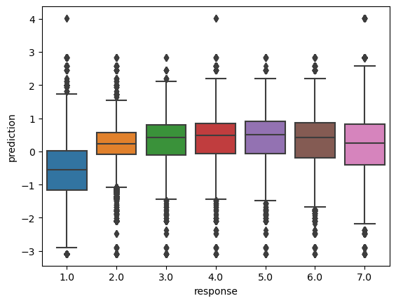
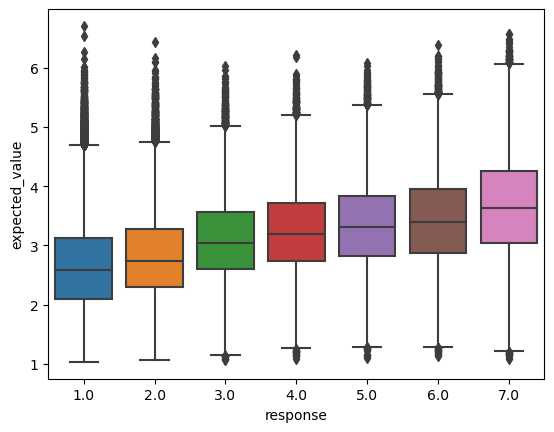
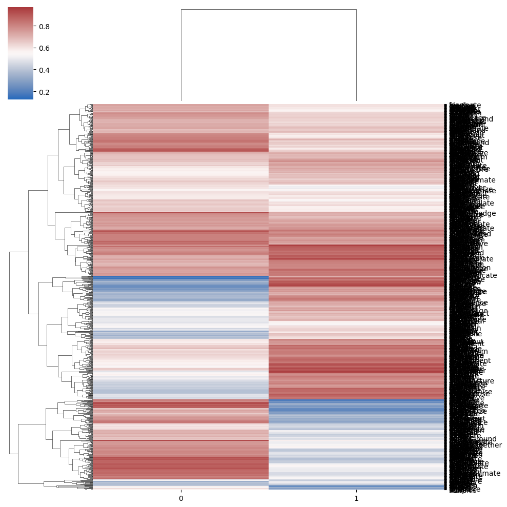
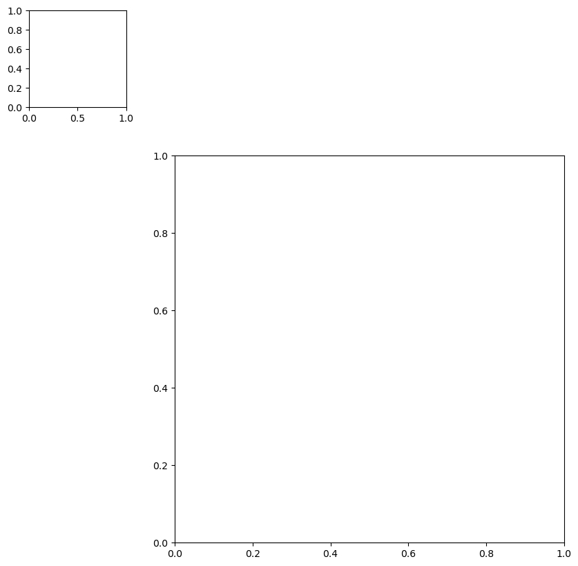

TELL ENT ENT PROP
B B B B I I
someone told someone that something happenedSelection
Reading
Data: White and Rawlins (2020) on collecting a broad-coverage acceptability judgment dataset focused on complement clauses and White and Rawlins (2016) on using that dataset to develop a computational model of selection. We will use the data collected for those papers, which can be found here, in this module.
Theory: Lohninger and Wurmbrand (to appear) on the typology of complement clauses. We will specifically be concerned with their hypothesis that the distributional complement clauses is constrained by a monotonicity constraint relating ordered semantic types to ordered syntactic types.
#!wget http://megaattitude.io/projects/mega-acceptability/mega-acceptability-v1.zip -P data/
#!unzip data/mega-acceptability-v1.zip -d data/
data_dir = "./data/mega-acceptability-v1/"import os
import pandas as pd
def load_data(fname: str, verbose: bool = True) -> pd.DataFrame:
# read the raw data skipping comment rows at the beginning
data = pd.read_csv(fname, sep="\t")
if verbose:
n_datapoints = data.shape[0]
print(f"The full dataset has {n_datapoints} datapoints.")
# remove non-native speakers
data = data.query("nativeenglish")
if verbose:
n_datapoints_native = data.shape[0]
print(f"Removing {n_datapoints - n_datapoints_native} "
"responses from nonnative speakers.")
# remove NaN judgments
data = data.query("~response.isnull()")
if verbose:
n_datapoints_nonnull = data.shape[0]
print(f"Removing {n_datapoints_native - n_datapoints_nonnull} NA responses.")
return datadata = load_data(os.path.join(data_dir, "mega-acceptability-v1.tsv"))
dataThe full dataset has 250000 datapoints.
Removing 600 responses from nonnative speakers.
Removing 10 NA responses.| participant | list | presentationorder | verb | frame | response | nativeenglish | sentence | |
|---|---|---|---|---|---|---|---|---|
| 0 | 4 | 862 | 1 | turn_out | NP was Ved whichNP to VP | 2.0 | True | Someone was turned out which thing to do. |
| 1 | 381 | 862 | 1 | turn_out | NP was Ved whichNP to VP | 1.0 | True | Someone was turned out which thing to do. |
| 2 | 395 | 862 | 1 | turn_out | NP was Ved whichNP to VP | 2.0 | True | Someone was turned out which thing to do. |
| 3 | 621 | 862 | 1 | turn_out | NP was Ved whichNP to VP | 1.0 | True | Someone was turned out which thing to do. |
| 4 | 527 | 862 | 1 | turn_out | NP was Ved whichNP to VP | 1.0 | True | Someone was turned out which thing to do. |
| ... | ... | ... | ... | ... | ... | ... | ... | ... |
| 249995 | 113 | 928 | 50 | madden | NP Ved about NP | 4.0 | True | Someone maddened about something. |
| 249996 | 32 | 928 | 50 | madden | NP Ved about NP | 2.0 | True | Someone maddened about something. |
| 249997 | 544 | 928 | 50 | madden | NP Ved about NP | 1.0 | True | Someone maddened about something. |
| 249998 | 727 | 928 | 50 | madden | NP Ved about NP | 7.0 | True | Someone maddened about something. |
| 249999 | 294 | 928 | 50 | madden | NP Ved about NP | 1.0 | True | Someone maddened about something. |
249390 rows × 8 columns
White and Rawlins (2016) model the ordinal acceptability judgments \(r_i\) associated with a sentence \(s_i\) to be a function of the probability \(\alpha_{vf}\) that the main clause verb \(v = \text{verb}(i)\) in \(s_i\) is acceptable in the syntactic frame \(f = \text{frame}(i)\) instantiated in \(s_i\).1 They model this probability as a function of two other kinds of probability: (i) the probability \(\lambda_{vs}\) that a particular verb \(v\) can have a particular semantic type signature \(s\); and (ii) the probability \(\mu_{sf}\) that a particular semantic type signature \(s\) can be mapped onto a particular syntactic frame \(f\).
The basic idea is that we should predict a verb to be good–modulo other factors, such as its case assignment properties (pesetsky_zero_1991?)–in a particular syntactic frame insofar as it can have at least one semantic type signature that maps onto that frame. That is, they define the probability \(\alpha_{vf}\) that a main clause verb \(v\) is acceptable in a syntactic frame \(f\) to be \(p\left(\bigvee_s l_{vs} \land m_{sf}\right)\), where:
\[\begin{align*} l_{vs} &= \begin{cases} \top & \text{if } v \text{ can have semantic type signature } s\\ \bot & \text{otherwise} \end{cases}\\ m_{sf} &= \begin{cases} \top & \text{if } s \text{ can map onto syntactic frame } f\\ \bot & \text{otherwise} \end{cases} \end{align*}\]
Insofar as a verb’s having a particular type signature is independent of that type signature mapping onto a particular syntactic frame, this probability can be factored into an expression in terms of \(\lambda_{vs}\) and \(\mu_{sf}\):
\[\begin{align*} p\left(\bigvee_s l_{vs} \land m_{sf}\right) &= p\left(\lnot\lnot\bigvee_s l_{vs} \land m_{sf}\right)\\ &= 1 - p\left(\lnot\bigvee_s l_{vs} \land m_{sf}\right)\\ &= 1 - p\left(\bigwedge_s \lnot\left[ l_{vs} \land m_{sf}\right]\right)\\ &= 1 - \prod_s p\left(\lnot\left[ l_{vs} \land m_{sf}\right]\right)\\ &= 1 - \prod_s 1 - p\left(l_{vs} \land m_{sf}\right)\\ &= 1 - \prod_s 1 - p\left(l_{vs}\right)p\left(m_{sf}\right)\\ &= 1 - \prod_s 1 - \lambda_{vs}\mu_{sf}\\ \end{align*}\]
Importantly, they assume: (a) that verbs can be compatible with multiple semantic type signatures; (b) that multiple semantic type signatures can map onto the same frame; and (c) that multiple frames can be mapped onto by the same semantic type signature. So \(\sum_s \lambda_{vs}\) and \(\sum_s \mu_{sf}\) can be anywhere between \(0\) and the number of type signatures, and \(\sum_f \mu_{sf}\) can be anywhere between \(0\) and the number of syntactic frames. None of the three need to be \(1\).
Solving for \(\lambda_{vs}\) and \(\mu_{sf}\), from which \(\alpha_{vf}\) can be computed deterministically, is an instance of a matrix factorization problem–of which principal component analysis [PCA; Pearson (1901)], factor analysis, and postive/non-negative matrix factorization [NMF; Paatero and Tapper (1994)] are common forms.
from numpy import ndarray
from pandas import CategoricalDtype
def hash_series(series: pd.Series, categories: Optional[list[str]] = None, indexation: int=1) -> tuple[ndarray, ndarray]:
"""Hash a series to numeric codes
Parameters
----------
column
The series to hash
index
The starting index (defaults to 1)
"""
# enforce 0- or 1-indexation
if indexation not in [0, 1]:
raise ValueError("Must choose either 0- or 1-indexation.")
# convert the series to a category
if categories is None:
category_series = series.astype("category")
else:
cat_type = CategoricalDtype(categories=categories)
category_series = series.astype(cat_type)
# get the hash
hash_map = category_series.cat.categories.values
# map to one-indexed codes
hashed_series = (category_series.cat.codes + indexation).values
return hash_map, hashed_seriesimport cmdstanpy, arviz
from cmdstanpy import CmdStanModel
from typing import Optional
from enum import Enum
from dataclasses import dataclass
from arviz import InferenceData
class FitType(Enum):
OPTIMIZE = 0
SAMPLE = 1
@dataclass
class SelectionData:
N_verb: int
N_frame: int
N_component: int
N_subj: int
N_resp: int
N_resp_levels: int
verb: ndarray
frame: ndarray
subj: ndarray
resp: ndarray
class UnconstrainedSelectionModel:
stan_file = "./models/fuzzy-logic-factorization.stan"
data_class = SelectionData
def __init__(self, n_component: int):
self.model = CmdStanModel(stan_file=self.stan_file)
self.n_component = n_component
def construct_model_data(self, data: pd.DataFrame):
self.verb_hash_map, verb_hashed = hash_series(data.verb)
self.frame_hash_map, frame_hashed = hash_series(data.frame)
self.subj_hash_map, subj_hashed = hash_series(data.participant)
model_data = {
"N_verb": self.verb_hash_map.shape[0],
"N_frame": self.frame_hash_map.shape[0],
"N_component": self.n_component,
"N_subj": self.subj_hash_map.shape[0],
"N_resp": data.shape[0],
"N_resp_levels": 7,
"verb": verb_hashed,
"frame": frame_hashed,
"subj": subj_hashed,
"resp": data.response.astype(int).values
}
return model_data
def _validate_data(self):
self.data_class(**self.model_data)
def fit(
self,
data: pd.DataFrame,
fit_type: FitType = FitType.OPTIMIZE,
save_dir: Optional[str] = None,
verbose: bool = True,
show_progress: bool = True
) -> InferenceData:
self.model_data = self.construct_model_data(data)
self._validate_data()
if verbose:
print("Fitting model...")
self.fit_type = fit_type
if fit_type == FitType.OPTIMIZE:
self.raw_model_fit = self.model.optimize(
data=self.model_data
)
else:
self.raw_model_fit = self.model.sample(
data=self.model_data,
show_progress=show_progress
)
if save_dir is not None:
if verbose:
print("Saving model...")
self.save(save_dir)
if verbose:
print("Saving model...")
return self
def pointwise_log_likelihoods(self, data: Optional[pd.DataFrame] = None, **kwargs) -> InferenceData:
if data is None:
model_data = self.model_data
else:
model_data = self.construct_model_data(data, **kwargs)
log_likelihoods = self.model.generate_quantities(
data=model_data,
previous_fit=self.raw_model_fit
)
return arviz.from_cmdstanpy(log_likelihoods)
@property
def model_fit(self):
if fit_type == FitType.OPTIMIZE:
return self.raw_model_fit
else:
return arviz.from_cmdstanpy(self.raw_model_fit)
def save(self, save_dir: str = "."):
self.raw_model_fit.save_csvfiles(save_dir)
@classmethod
def from_csv(cls, path: str, **kwargs):
model = cls(**kwargs)
model.raw_model_fit = cmdstanpy.from_csv(path)model = UnconstrainedSelectionModel(2, 1., False).fit(data, fit_type=FitType.OPTIMIZE)TypeError: FuzzyLogicFactorizationModel.__init__() takes 2 positional arguments but 4 were givenimport seaborn as sns
from scipy.stats import spearmanr
data["prediction"] = model.raw_model_fit.stan_variable('mu')
_ = sns.boxplot(data, x="response", y="prediction")
spearmanr(data[["response", "prediction"]])SignificanceResult(statistic=0.40889891447222454, pvalue=0.0)
model.raw_model_fit.stan_variables(){'verb_component_prior_aux': array([0.128443, 0.125146, 0.656217, 0.779327, 0.827608, 0.312784,
0.848003, 0.808027, 0.422028, 0.375185, 0.353681, 0.327297,
0.733399, 0.854325, 0.778634, 0.227325, 0.146691, 0.721576,
0.527884, 0.123827, 0.275521, 0.370464, 0.702175, 0.879695,
0.138056, 0.174648, 0.21029 , 0.766008, 0.151918, 0.292663]),
'frame_component_prior_aux': array([0.128859, 0.439508, 0.856828, 0.384938, 0.652028, 0.662436,
0.824644, 0.492884, 0.45846 , 0.13276 , 0.347303, 0.768129,
0.386184, 0.876037, 0.26281 , 0.127104, 0.329268, 0.743779,
0.685283, 0.393859, 0.327524, 0.212908, 0.138822, 0.342837,
0.870582, 0.866983, 0.29064 , 0.391456, 0.875311, 0.81953 ]),
'verb_component_prior_precision': array([3.94606 , 6.85934 , 2.14684 , 0.355818, 4.316 , 0.66685 ,
2.00714 , 2.95657 , 0.277982, 0.313856, 3.66564 , 3.61452 ,
0.270871, 6.10048 , 0.198073, 0.690347, 0.306669, 0.487583,
0.321813, 0.260728, 0.31567 , 2.29999 , 2.5018 , 0.404016,
1.23719 , 4.43367 , 0.811716, 2.26288 , 4.82592 , 0.685407]),
'frame_component_prior_precision': array([2.47689 , 6.94865 , 1.14166 , 0.836653, 0.262048, 3.33315 ,
1.06894 , 2.26159 , 0.192062, 2.89519 , 0.906216, 0.373096,
2.43317 , 0.250202, 0.304647, 0.292793, 2.11231 , 0.964812,
2.65006 , 1.22376 , 2.49388 , 1.91038 , 1.1461 , 0.1658 ,
1.44303 , 4.07296 , 2.55249 , 3.40739 , 6.50941 , 0.165849]),
'verb_component': array([[0.631036, 0.12458 , 0.750635, ..., 0.713654, 0.701122, 0.859162],
[0.484222, 0.319344, 0.861388, ..., 0.580126, 0.725599, 0.86963 ],
[0.851271, 0.499822, 0.655394, ..., 0.187742, 0.133366, 0.73629 ],
...,
[0.456762, 0.502419, 0.210684, ..., 0.217777, 0.839811, 0.631872],
[0.134225, 0.769278, 0.559535, ..., 0.195162, 0.213416, 0.876293],
[0.207543, 0.879065, 0.863831, ..., 0.855847, 0.12572 , 0.339096]]),
'frame_component': array([[0.148117, 0.139249, 0.867981, ..., 0.217972, 0.787618, 0.690592],
[0.143749, 0.607432, 0.713306, ..., 0.49488 , 0.72556 , 0.812185],
[0.239083, 0.560894, 0.251543, ..., 0.14582 , 0.198369, 0.138268],
...,
[0.584786, 0.405192, 0.493362, ..., 0.797333, 0.353267, 0.154806],
[0.298372, 0.119673, 0.287615, ..., 0.747307, 0.389407, 0.160099],
[0.66831 , 0.50375 , 0.194715, ..., 0.608931, 0.436724, 0.751809]]),
'scale': 0.342677,
'subject_intercept': array([ 4.74424e-01, 5.81169e-01, 1.52451e-01, -1.21523e+00,
-3.76642e-01, 4.12773e-01, 4.93730e-01, -1.55746e+00,
4.30370e-01, -2.45055e-03, -4.16315e-01, -9.36667e-01,
-1.57720e+00, 8.99032e-01, -3.84752e-01, -7.86858e-01,
5.51128e-01, -8.23691e-01, 2.46000e-01, -9.24073e-01,
-5.02015e-01, 5.28516e-01, 7.43493e-03, -6.26881e-02,
-1.12118e+00, -8.09475e-01, 8.53874e-01, 3.55306e-01,
-1.24594e+00, -6.87277e-02, -1.80899e-01, -1.91844e-01,
3.68925e-01, -1.21469e+00, -9.09536e-01, -1.11137e+00,
1.25902e-01, -3.76982e-01, 7.98636e-01, 5.91311e-02,
-6.42357e-01, 2.30568e-01, -5.81096e-01, 3.53952e-01,
2.48313e-01, -1.33410e+00, 7.01760e-01, 6.26869e-01,
-1.04620e+00, -6.86099e-03, 6.30465e-01, 8.49885e-01,
-1.13165e+00, -2.04142e+00, 3.30557e-01, 9.89475e-01,
5.87273e-01, -8.70097e-01, 1.64817e+00, -3.46082e-01,
2.48271e-01, -1.45393e-01, 7.38582e-01, -3.39631e-01,
9.56582e-02, -7.41979e-01, 6.49592e-01, 9.33503e-01,
1.56984e+00, -4.53466e-01, 5.06329e-01, -5.76661e-01,
2.65088e+00, 9.89681e-01, 1.07587e+00, -1.29228e+00,
4.34748e-01, 1.30630e-01, 5.28397e-02, -1.84634e+00,
-3.37688e-02, -5.73385e-01, -1.37377e+00, -3.23291e-01,
5.50752e-01, -1.52814e+00, 7.78625e-01, 2.76436e-01,
3.18751e-01, -2.71143e-01, 2.58047e-01, -5.05047e-01,
5.30805e-01, 3.67817e-01, 2.02014e-02, -1.44350e+00,
3.49213e-02, 2.71423e-01, 5.93516e-01, 6.83710e-01,
-8.02496e-01, -1.08427e+00, -7.12690e-01, -5.94339e-01,
1.18571e+00, -1.60786e+00, 5.32612e-02, 7.92068e-01,
-6.67420e-02, 8.86533e-02, 4.38447e-01, 1.93246e-02,
4.69271e-01, 1.50089e-01, -6.52321e-03, -7.05430e-01,
1.02084e+00, -1.44481e-01, 1.34385e+00, -7.06620e-01,
5.99348e-01, 2.23753e-01, 3.03024e-01, -1.16437e+00,
6.20510e-01, 2.39010e-01, 6.33210e-01, 7.83420e-02,
-5.35018e-01, -7.68897e-01, 2.48338e-01, -8.21896e-01,
-1.50753e-02, 7.70642e-01, 4.07584e-01, -3.21323e-01,
2.71655e-01, -5.90605e-02, 4.25167e-01, 3.13657e-02,
-8.97341e-01, -1.77354e+00, 8.26726e-01, 1.76854e+00,
-5.74292e-01, 5.09806e-01, 7.04516e-01, -8.08557e-03,
-9.93954e-01, 8.03876e-02, 6.90031e-01, 4.02817e-01,
-7.98484e-01, -8.91539e-01, 1.28409e-01, 1.71990e-01,
7.75928e-01, -1.03386e+00, 4.42372e-02, 5.15516e-01,
-3.44331e-01, 1.18200e-03, 1.13494e+00, -4.79905e-02,
-2.73264e-01, -5.49827e-01, -2.60540e-01, 2.46635e-01,
6.07760e-01, 7.34930e-01, 3.75429e-01, 3.40623e-01,
4.57374e-02, 1.63316e-01, -6.37417e-01, -3.88078e-01,
9.41364e-02, -8.36724e-02, 5.30396e-01, 5.32977e-01,
-7.62135e-02, -5.23548e-01, -1.02387e+00, 6.36379e-01,
-1.52251e+00, 1.21847e-01, -2.27075e-01, -1.19180e+00,
8.35557e-01, -8.33588e-01, -1.19962e-01, 2.15247e-01,
-7.90993e-01, -3.38465e-01, 6.49465e-01, -9.55126e-01,
-3.13049e-02, 1.81868e+00, 8.47810e-02, -2.25852e+00,
2.29785e-01, -6.79092e-01, -3.57089e-02, 1.18436e+00,
3.88629e-01, -1.56359e-01, -9.52949e-01, 1.04602e+00,
1.24202e+00, 9.83614e-01, -2.74759e-02, 6.20111e-01,
5.98930e-01, 2.17615e-01, 7.86091e-01, -8.29147e-01,
6.39468e-01, -1.25558e+00, 9.26507e-03, -3.13464e-01,
9.38088e-01, 2.27649e+00, -2.53768e+00, -3.83406e-01,
2.79527e-01, 6.11449e-01, 6.82550e-01, 3.97554e-01,
4.47691e-01, -5.54276e-01, 1.76410e-01, 8.73556e-02,
-3.99629e-01, 6.94054e-01, 3.43673e-01, 1.01187e+00,
-2.18517e+00, -5.70515e-01, -6.79002e-01, 2.22539e-01,
4.84307e-01, 2.40932e+00, -6.47600e-01, 6.68794e-01,
6.12225e-01, 5.45909e-01, 6.54368e-01, 1.03091e-02,
-1.41465e-01, 1.56109e-01, -1.41005e+00, 7.13663e-01,
1.11277e-01, 3.64858e-01, 3.34982e-01, 6.26717e-01,
5.26949e-01, -4.01259e-01, 9.06606e-01, -1.19428e+00,
1.52844e-01, 1.01377e+00, 6.43483e-01, 6.97471e-01,
1.14382e+00, -3.99871e-03, 2.66114e-01, -1.49591e-01,
2.57018e-01, -4.66524e-01, 9.44353e-01, 2.17188e-01,
8.85961e-01, 2.14621e-02, 1.02294e+00, 6.70271e-01,
-5.41427e-01, -1.48982e-01, -3.07123e-01, -1.10756e+00,
-3.00867e-01, 3.96404e-01, 1.59119e-01, -3.03103e-01,
5.77373e-02, -8.40116e-01, -5.53462e-01, 8.28390e-01,
-4.80625e-01, -1.49606e+00, 1.87902e-01, -1.46884e+00,
-6.33657e-01, -3.71626e-01, -8.77436e-01, -7.03373e-02,
7.40037e-01, -8.93051e-01, 1.30231e+00, -1.45159e-01,
-2.01342e-01, -1.97197e+00, -5.74940e-01, 8.54658e-01,
-1.43819e-01, -7.21665e-02, -5.45656e-01, 1.07217e+00,
-6.01677e-01, -1.59161e+00, 4.54926e-01, -1.59611e+00,
2.19739e-01, 4.70924e-01, -5.36177e-01, 7.58519e-01,
1.27801e-01, 4.78080e-01, 2.33537e-01, -6.89422e-01,
8.83141e-01, 4.86207e-01, 2.37032e-01, 8.08333e-01,
7.32945e-01, -1.17114e+00, 7.33238e-01, -1.08420e+00,
1.93273e+00, 6.09959e-01, 1.83113e+00, 6.52965e-01,
1.24981e+00, -2.20897e-01, -8.82339e-02, -8.73349e-01,
7.39357e-01, -7.77731e-02, 7.29637e-01, -1.15229e+00,
8.94273e-02, 2.04990e-01, 5.52298e-02, -1.13349e+00,
8.61106e-01, -4.88224e-01, 9.01410e-01, -9.71639e-01,
2.77285e-01, -1.21580e-01, -7.44914e-01, 8.31934e-01,
2.40882e-01, 6.88906e-01, -7.45428e-01, 6.96323e-02,
-1.30449e-01, -1.05073e+00, 5.51754e-02, 7.47091e-01,
-1.19242e+00, -2.65441e-01, -2.56910e-01, 4.35275e-01,
-1.23404e-01, 9.67246e-02, 2.44612e-01, -9.98314e-01,
1.17133e-01, 1.50953e-01, 3.72173e-01, 1.81027e+00,
6.08010e-01, 1.65044e-01, 6.97150e-01, -8.59175e-01,
3.64691e-01, -9.03866e-01, -1.71463e-01, -4.97181e-01,
3.59801e-01, 2.02395e-01, -6.40316e-01, -1.36781e+00,
6.25449e-01, 3.91780e-01, 1.22762e-01, -2.09249e+00,
1.59385e-01, 1.02802e+00, 1.30957e+00, 5.12622e-01,
-3.10065e-03, 1.38047e+00, 6.46599e-01, 1.27330e+00,
1.47127e+00, -1.94907e-01, 1.02943e+00, -1.27448e-01,
6.99052e-01, -1.70971e-01, 2.70797e-01, -4.46774e-01,
-2.18086e-01, 1.76370e-01, 3.67291e-01, 7.24871e-01,
6.20429e-01, 4.54635e-01, 1.60206e-01, 2.11376e-01,
6.58752e-01, -1.21890e+00, -3.25728e+00, -6.34088e-01,
3.30526e-01, 3.92794e-01, 8.37157e-01, -8.29547e-02,
1.07893e+00, -3.17053e-01, -1.09768e+00, -8.34819e-01,
3.79134e-01, 1.58639e-01, 3.88338e-01, -1.26107e+00,
-1.44337e+00, -6.61995e-01, 1.56509e-01, 1.07669e+00,
4.32753e-01, -4.59803e-01, -3.60443e-01, 1.37046e+00,
-1.08646e+00, -7.79049e-01, -8.56338e-01, 7.26129e-01,
1.11191e+00, -5.38990e-01, 8.07547e-01, -5.00520e-01,
9.30688e-01, -1.08224e+00, -2.32093e-01, 1.09179e+00,
-1.07688e-01, -1.43090e+00, -3.02642e-01, 7.92652e-01,
9.86079e-02, 6.58361e-01, -1.05491e+00, 8.25960e-01,
1.26836e+00, 5.04173e-01, 8.12961e-01, 4.23600e-01,
1.54567e+00, -1.27906e+00, -2.46772e-01, -6.27626e-01,
-1.20863e+00, 8.53035e-01, -1.93384e+00, -1.37296e+00,
7.02432e-03, -1.33295e+00, -3.05969e-01, 4.15330e-01,
4.14983e-01, 3.42292e-01, -1.29219e+00, 1.79922e-01,
2.98742e-02, -8.96372e-01, 3.42554e-01, -6.75668e-01,
-8.03111e-02, 7.92982e-01, 1.09564e+00, 5.07590e-01,
-3.43324e-01, 5.83436e-01, -8.66205e-01, 4.49343e-01,
2.74063e-01, -1.07467e-03, -8.82549e-01, 3.26919e-02,
-9.19501e-01, 1.00034e+00, 8.26838e-01, 3.25850e-01,
-2.18428e-01, 3.44479e-01, -5.93609e-01, 5.44990e-01,
4.69017e-01, 5.32558e-01, -5.76181e-01, -3.87983e-02,
-1.38106e-02, 8.28738e-02, 6.83411e-01, -5.76905e-01,
8.58287e-01, 1.16795e+00, 9.24057e-01, 1.14211e+00,
4.92365e-02, 1.29232e-01, 8.43683e-02, 1.75745e-01,
4.00143e-02, 6.23554e-01, 1.75570e-01, -1.96493e+00,
-7.44102e-01, -1.19723e+00, 6.60265e-01, 2.02981e+00,
7.68875e-01, 5.95512e-02, -2.64178e+00, 1.04027e-01,
-4.58022e-02, 1.01061e+00, -6.00788e-01, -5.27978e-01,
9.55317e-01, 1.01556e+00, 1.24528e-01, -7.53803e-01,
1.64385e-01, 1.13961e-01, -2.21407e-01, -4.54925e-01,
-4.62257e-01, -1.72978e-01, -1.51815e-01, -1.03305e+00,
4.59110e-01, -3.58224e-02, 1.29174e-01, 1.17854e+00,
-7.00523e-01, 1.18655e-01, 4.62443e-01, -2.73184e-01,
4.26115e-01, 6.13271e-01, -9.68027e-02, 4.41299e-01,
-6.01965e-01, 3.65829e-01, 3.65260e-01, -1.10523e+00,
2.34591e-01, 8.73458e-01, 3.58993e-02, -5.87541e-03,
-8.15921e-01, 5.31774e-01, -3.70548e-02, 2.39167e-01,
-6.25066e-01, 2.41151e-01, 2.02517e-01, 1.17971e+00,
-1.19871e+00, -3.86237e-01, 1.93197e-01, 3.59750e-01,
-2.99647e-01, -1.87421e-01, 3.84670e+00, -4.39198e-01,
6.66417e-01, 6.64133e-01, -1.23445e+00, 4.13822e-02,
9.10363e-01, 7.03194e-01, 6.37879e-01, -1.54531e+00,
-1.93263e+00, 5.77746e-01, 1.29742e+00, -2.80598e-01,
-7.05573e-01, -3.06071e+00, -4.75422e-01, 3.65198e-01,
9.74521e-01, 7.32553e-01, -8.00326e-01, 4.41971e-01,
-1.95516e-01, -2.43647e-01, -6.74946e-02, -1.44551e-01,
-1.31030e-01, 5.22529e-01, 2.52823e-01, -1.03373e-01,
-6.31948e-01, -2.81622e-01, -9.36986e-04, 1.54589e-02,
-5.68423e-01, 3.00506e-01, 4.62269e-01, -3.53738e-01,
-2.06421e+00, 2.69334e-01, 3.93483e-01, -1.14338e+00,
1.07983e+00, 5.48180e-01, -5.45344e-01, 3.05104e-02,
3.15502e-01, -1.58942e+00, -9.85861e-01, 1.49249e-01,
-7.88658e-01, 6.68504e-01, 5.33568e-01, 7.36544e-01,
-1.05825e+00, 1.02985e-01, -2.35514e+00, -7.23614e-01,
-6.70479e-01, -1.46119e-01, 4.97112e-01, -1.04240e+00,
7.24753e-01, 5.18291e-01, -1.37861e+00, -1.04266e+00,
4.86643e-01, 3.66984e-01, 7.86917e-01, -1.19986e+00,
-9.10797e-02, -3.21514e-01, 6.13457e-01, -4.11578e-01,
-7.19788e-02, -5.84740e-01, -1.54333e+00, 9.77076e-01,
5.75926e-01, -1.00221e+00, -3.25447e-01, -1.46595e+00,
-6.01940e-01, -7.13286e-01, -6.50424e-01, 7.77025e-01,
6.20243e-01, 1.30215e-01, 2.77166e-03, 5.73520e-01,
-9.29842e-01, -6.83950e-01, 5.97183e-01, 1.02583e+00,
2.38601e-01, -2.39362e-01, 1.32720e-01, 4.07196e-01,
7.34207e-01, 3.55592e-01, 3.64512e-01, 3.96730e-01,
4.66226e-01, -7.16174e-01, 8.75962e-02, 2.02811e-01,
-4.34386e-01, -8.45573e-01, 1.04871e+00, 5.96921e-01,
-1.73109e+00, 7.61483e-01, 6.69625e-01, 1.85631e-01,
2.67182e-01, 1.09866e+00, -5.32408e-01, 6.28556e-01,
8.70480e-01, -1.96992e+00, 6.84554e-01, -3.95174e-01,
2.01807e-01, 2.72352e-01, -5.72349e-01, 4.86605e-01,
4.87756e-01, 3.66553e-01, 3.28475e-01, 3.75401e-01,
5.53631e-01, 6.53921e-01, -1.49613e+00, -6.38289e-01,
-1.65964e+00, 3.01679e-01, 8.20036e-03, -7.31041e-01,
-7.63256e-02, -3.52873e-01, 1.07270e-01, 1.01285e+00,
-1.52660e-01, -7.00161e-02, -8.24873e-01, -4.52995e-01,
-3.28376e-01, -4.90847e-01, -2.89744e-01]),
'cutpoints': array([-0.720339, 0.18709 , 0.552617, 0.906846, 1.3986 , 2.15084 ]),
'verb_component_prior_mean': array([1.28443e-01, 1.60741e-02, 1.05481e-02, 8.22040e-03, 6.80327e-03,
2.12795e-03, 1.80451e-03, 1.45810e-03, 6.15357e-04, 2.30873e-04,
8.16554e-05, 2.67256e-05, 1.96005e-05, 1.67452e-05, 1.30384e-05,
2.96395e-06, 4.34786e-07, 3.13732e-07, 1.65614e-07, 2.05075e-08,
5.65024e-09, 2.09321e-09, 1.46980e-09, 1.29298e-09, 1.78503e-10,
3.11753e-11, 6.55585e-12, 5.02183e-12, 7.62907e-13, 2.23275e-13]),
'verb_component_prior_alpha': array([5.06843e-01, 1.10258e-01, 2.26451e-02, 2.92497e-03, 2.93629e-02,
1.41903e-03, 3.62190e-03, 4.31096e-03, 1.71058e-04, 7.24609e-05,
2.99320e-04, 9.66002e-05, 5.30920e-06, 1.02154e-04, 2.58255e-06,
2.04616e-06, 1.33335e-07, 1.52970e-07, 5.32966e-08, 5.34687e-09,
1.78361e-09, 4.81436e-09, 3.67715e-09, 5.22383e-10, 2.20843e-10,
1.38221e-10, 5.32149e-12, 1.13638e-11, 3.68172e-12, 1.53034e-13]),
'verb_component_prior_beta': array([3.43922 , 6.74908 , 2.1242 , 0.352893, 4.28663 , 0.665431,
2.00352 , 2.95226 , 0.277811, 0.313784, 3.66534 , 3.61443 ,
0.270865, 6.10038 , 0.19807 , 0.690345, 0.306669, 0.487583,
0.321812, 0.260728, 0.31567 , 2.29999 , 2.5018 , 0.404016,
1.23719 , 4.43367 , 0.811716, 2.26288 , 4.82592 , 0.685407]),
'frame_component_prior_mean': array([1.28859e-01, 5.66346e-02, 4.85261e-02, 1.86795e-02, 1.21796e-02,
8.06819e-03, 6.65339e-03, 3.27935e-03, 1.50345e-03, 1.99599e-04,
6.93213e-05, 5.32477e-05, 2.05634e-05, 1.80143e-05, 4.73435e-06,
6.01754e-07, 1.98138e-07, 1.47371e-07, 1.00991e-07, 3.97762e-08,
1.30277e-08, 2.77370e-09, 3.85050e-10, 1.32009e-10, 1.14925e-10,
9.96380e-11, 2.89588e-11, 1.13361e-11, 9.92260e-12, 8.13187e-12]),
'frame_component_prior_alpha': array([3.19170e-01, 3.93534e-01, 5.54003e-02, 1.56283e-02, 3.19164e-03,
2.68925e-02, 7.11207e-03, 7.41656e-03, 2.88757e-04, 5.77876e-04,
6.28201e-05, 1.98665e-05, 5.00343e-05, 4.50722e-06, 1.44231e-06,
1.76189e-07, 4.18530e-07, 1.42186e-07, 2.67632e-07, 4.86764e-08,
3.24894e-08, 5.29883e-09, 4.41308e-10, 2.18872e-11, 1.65840e-10,
4.05822e-10, 7.39170e-11, 3.86265e-11, 6.45902e-11, 1.34866e-12]),
'frame_component_prior_beta': array([2.15772 , 6.55512 , 1.08626 , 0.821024, 0.258857, 3.30626 ,
1.06183 , 2.25418 , 0.191774, 2.89461 , 0.906153, 0.373076,
2.43312 , 0.250198, 0.304646, 0.292793, 2.11231 , 0.964812,
2.65006 , 1.22376 , 2.49388 , 1.91038 , 1.1461 , 0.1658 ,
1.44303 , 4.07296 , 2.55249 , 3.40739 , 6.50941 , 0.165849]),
'verb_frame': array([[0.999849, 0.999951, 0.999031, ..., 0.998878, 0.999747, 0.999946],
[0.999996, 0.999996, 0.999937, ..., 0.999911, 0.999997, 0.999995],
[0.999773, 0.999885, 0.999436, ..., 0.999494, 0.999845, 0.99987 ],
...,
[0.99999 , 0.999953, 0.999848, ..., 0.999734, 0.999978, 0.99993 ],
[0.999919, 0.999907, 0.999864, ..., 0.999264, 0.999826, 0.999921],
[0.999754, 0.999943, 0.999812, ..., 0.99994 , 0.999983, 0.99995 ]]),
'mu': array([-0.20531 , -0.325849 , 1.5518 , ..., 0.0194879, -0.319544 ,
-0.462354 ])}torch.tensor??Docstring: tensor(data, *, dtype=None, device=None, requires_grad=False, pin_memory=False) -> Tensor Constructs a tensor with no autograd history (also known as a "leaf tensor", see :doc:`/notes/autograd`) by copying :attr:`data`. .. warning:: When working with tensors prefer using :func:`torch.Tensor.clone`, :func:`torch.Tensor.detach`, and :func:`torch.Tensor.requires_grad_` for readability. Letting `t` be a tensor, ``torch.tensor(t)`` is equivalent to ``t.clone().detach()``, and ``torch.tensor(t, requires_grad=True)`` is equivalent to ``t.clone().detach().requires_grad_(True)``. .. seealso:: :func:`torch.as_tensor` preserves autograd history and avoids copies where possible. :func:`torch.from_numpy` creates a tensor that shares storage with a NumPy array. Args: data (array_like): Initial data for the tensor. Can be a list, tuple, NumPy ``ndarray``, scalar, and other types. Keyword args: dtype (:class:`torch.dtype`, optional): the desired data type of returned tensor. Default: if ``None``, infers data type from :attr:`data`. device (:class:`torch.device`, optional): the device of the constructed tensor. If None and data is a tensor then the device of data is used. If None and data is not a tensor then the result tensor is constructed on the CPU. requires_grad (bool, optional): If autograd should record operations on the returned tensor. Default: ``False``. pin_memory (bool, optional): If set, returned tensor would be allocated in the pinned memory. Works only for CPU tensors. Default: ``False``. Example:: >>> torch.tensor([[0.1, 1.2], [2.2, 3.1], [4.9, 5.2]]) tensor([[ 0.1000, 1.2000], [ 2.2000, 3.1000], [ 4.9000, 5.2000]]) >>> torch.tensor([0, 1]) # Type inference on data tensor([ 0, 1]) >>> torch.tensor([[0.11111, 0.222222, 0.3333333]], ... dtype=torch.float64, ... device=torch.device('cuda:0')) # creates a double tensor on a CUDA device tensor([[ 0.1111, 0.2222, 0.3333]], dtype=torch.float64, device='cuda:0') >>> torch.tensor(3.14159) # Create a zero-dimensional (scalar) tensor tensor(3.1416) >>> torch.tensor([]) # Create an empty tensor (of size (0,)) tensor([]) Type: builtin_function_or_method
@dataclass
class SelectionModelParameters:
n_verb: int
n_frame: int
n_subj: int
n_resp_levels: int
@dataclass
class UnconstrainedSelectionModelParameters(SelectionModelParameters):
n_component: int
@dataclass
class SelectionData:
verb: ndarray
frame: ndarray
subj: ndarray
resp: ndarrayimport torch
from torch import Tensor
def ordered_logistic_likelihood(value: Tensor, jumps: Tensor, center: bool = True) -> Tensor:
"""Compute the ordered logistic likelihood given a value
Parameters
----------
value
The value to compute the likelihood for
(shape: batch_size)
jumps
The distance between cutpoints
(shape: batch_size x number of response levels - 1)
Returns
-------
log_likelihood
the ordered logistic log-likelihood
"""
cutpoints = torch.cumsum(jumps, 1)
if center:
cutpoints = cutpoints - cutpoints.mean()
cdfs = torch.sigmoid(cutpoints - value[:,None])
low_prob = torch.cat(
[torch.zeros([cdfs.shape[0], 1]), cdfs],
axis=1
)
high_prob = torch.cat(
[cdfs, torch.ones([cdfs.shape[0], 1])],
axis=1
)
return high_prob - low_probclass UnconstrainedSelectionModel(torch.nn.Module):
parameter_class = UnconstrainedSelectionModelParameters
data_class = SelectionData
def __init__(self, parameters: UnconstrainedSelectionModelParameters):
super().__init__()
self.model_parameters = parameters
self.verb_component_aux = torch.nn.Parameter(
torch.randn([
parameters.n_verb, parameters.n_component
]),
requires_grad=True
)
self.frame_component_aux = torch.nn.Parameter(
torch.randn([
parameters.n_frame, parameters.n_component
]),
requires_grad=True
)
self.log_jumps = torch.nn.Parameter(
torch.ones([
parameters.n_subj, parameters.n_resp_levels-1
]),
requires_grad=True
)
def forward(self, data: SelectionData):
verb_frame_prob = self.verb_frame_prob(data.verb, data.frame)
verb_frame_logodds = torch.log(verb_frame_prob) - torch.log(1. - verb_frame_prob)
jumps = self.jumps[data.subj]
return ordered_logistic_likelihood(
verb_frame_logodds, jumps
)
def verb_frame_prob(
self,
verb_idx: Optional[ndarray] = None,
frame_idx: Optional[ndarray] = None
) -> Tensor:
if verb_idx is not None or frame_idx is not None:
return 1. - torch.prod(
1. - self.verb_component_prob[verb_idx,:] *
self.frame_component_prob[frame_idx,:],
axis=1
)
elif verb_idx is None and frame_idx is not None:
return 1. - torch.prod(
1. - self.verb_component_prob[:,None,:] *
self.frame_component_prob[:,frame_idx,:],
axis=2
)
elif verb_idx is not None and frame_idx is None:
return 1. - torch.prod(
1. - self.verb_component_prob[verb_idx,None,:] *
self.frame_component_prob[None,:,:],
axis=2
)
else:
return 1. - torch.prod(
1. - self.verb_component_prob[:,None,:] *
self.frame_component_prob[None,:,:],
axis=2
)
@property
def verb_component_prob(self) -> Tensor:
return torch.sigmoid(self.verb_component_aux)
@property
def frame_component_prob(self) -> Tensor:
return torch.sigmoid(self.frame_component_aux)
@property
def jumps(self):
return torch.exp(self.log_jumps)from abc import ABC, abstractmethod
class SelectionModelTrainer(ABC):
data_class = SelectionData
@abstractmethod
def construct_model_parameters(self, data: pd.DataFrame) -> SelectionModelParameters:
raise NotImplementedError
def construct_model_data(self, data: pd.DataFrame) -> SelectionData:
if hasattr(self, "frame_hash_map"):
_, frame_hashed = hash_series(data.frame, self.frame_hash_map, indexation=0)
else:
self.frame_hash_map, frame_hashed = hash_series(data.frame, indexation=0)
if hasattr(self, "verb_hash_map"):
_, verb_hashed = hash_series(data.verb, self.verb_hash_map, indexation=0)
else:
self.verb_hash_map, verb_hashed = hash_series(data.verb, indexation=0)
if hasattr(self, "subj_hash_map"):
_, subj_hashed = hash_series(data.participant, self.subj_hash_map, indexation=0)
else:
self.subj_hash_map, subj_hashed = hash_series(data.participant, indexation=0)
model_data = {
"verb": verb_hashed,
"frame": frame_hashed,
"subj": subj_hashed,
"resp": data.response.astype(int).values - 1
}
return self.data_class(**model_data)
def _initialize_model(self, data: pd.DataFrame):
model_parameters = self.construct_model_parameters(data)
return self.model_class(model_parameters)
def fit(
self, data: pd.DataFrame, batch_size=1000, n_epochs:int=1000,
lr: float = 1e-5, verbosity: int=100
) -> UnconstrainedSelectionModel:
# necessary for initializing hashes
self.model_data = self.construct_model_data(data)
self.model = self._initialize_model(data)
optimizer = torch.optim.Adam(self.model.parameters(), lr=lr)
for e in range(n_epochs):
data_shuffled = data.sample(frac=1.).reset_index(drop=True)
n_batches = int(data_shuffled.shape[0]/batch_size)
epoch_total_loss = 0.
correlations = []
for i in range(n_batches):
lower_bound = i*batch_size
if i == (n_batches - 1):
upper_bound = data_shuffled.shape[0]
else:
upper_bound = (i+1)*batch_size
data_sub = self.construct_model_data(data_shuffled.iloc[lower_bound:upper_bound])
target = torch.tensor(data_sub.resp)
optimizer.zero_grad()
probs = self.model(data_sub)
logprobs = torch.log(probs)
loss = self.loss_function(logprobs, target)
# compute correlation between expected value and target
expected_value = torch.sum(
torch.arange(1, probs.shape[1]+1)[None,:] * probs,
axis=1
)
corr = torch.corrcoef(
torch.cat([
expected_value[None,:],
target[None,:]
], axis=0)
)
correlations.append(corr[0,1].item())
loss.backward()
optimizer.step()
epoch_total_loss += loss.item()
if verbosity and not e % verbosity:
print(f"Epoch: {e}")
print(f"Loss: {np.round(epoch_total_loss, 2)}")
print(f"Mean corr.: {np.round(np.mean(correlations), 2)}")
print()
return self
def expected_value(self, data: pd.DataFrame):
model_data = self.construct_model_data(data)
probs = self.model(model_data)
expected_value = torch.sum(
torch.arange(1, 8)[None,:] * probs,
axis=1
)
return expected_value
def likelihood(self, data: pd.DataFrame):
model_data = self.construct_model_data(data)
probs = self.model(model_data)
return probs[model_data.resp]
def predict(self, data: pd.DataFrame):
model_data = self.construct_model_data(data)
probs = self.model(model_data)
return probs[model_data.resp]class UnconstrainedSelectionModelTrainer(SelectionModelTrainer):
parameter_class = UnconstrainedSelectionModelParameters
model_class = UnconstrainedSelectionModel
def __init__(self, n_component: int):
self.n_component = n_component
self.loss_function = torch.nn.CrossEntropyLoss(reduction="sum")
def construct_model_parameters(self, data: pd.DataFrame) -> UnconstrainedSelectionModelParameters:
model_parameters = {
"n_verb": self.verb_hash_map.shape[0],
"n_frame": self.frame_hash_map.shape[0],
"n_subj": self.subj_hash_map.shape[0],
"n_resp_levels": 7,
"n_component": self.n_component
}
return self.parameter_class(**model_parameters)
m = UnconstrainedSelectionModelTrainer(2)
m.fit(data)Epoch: 0
Loss: 1147684.59
Mean corr.: 0.03
Epoch: 100
Loss: 950132.16
Mean corr.: 0.19
Epoch: 200
Loss: 792799.86
Mean corr.: 0.28
KeyboardInterrupt: from scipy.stats import spearmanr
data["expected_value"] = m.expected_value(data).data
_ = sns.boxplot(data, x="response", y="expected_value")
spearmanr(data[["response", "expected_value"]])SignificanceResult(statistic=0.42813175602327286, pvalue=0.0)
#sns.clustermap(pd.DataFrame(m.model.frame_component_prob.data, index=m.frame_hash_map), cmap="vlag", yticklabels=True)
sns.clustermap(pd.DataFrame(m.model.verb_component_prob.data, index=m.verb_hash_map), cmap="vlag", yticklabels=True)
@dataclass
class ConstrainedSelectionModelParameters(SelectionModelParameters):
n_clause_component: int
n_nonclause_component: intimport torch
from torch import Tensor
class ConstrainedSelectionModel(torch.nn.Module):
parameter_class = ConstrainedSelectionModelParameters
def __init__(self, parameters: ConstrainedSelectionModelParameters):
super().__init__()
self.model_parameters = parameters
self.verb_clause_aux = torch.nn.Parameter(
torch.randn([parameters.n_verb]),
requires_grad=True
)
self.verb_nonclause_aux = torch.nn.Parameter(
torch.randn([
parameters.n_verb, parameters.n_nonclause_component
]),
requires_grad=True
)
self.frame_clause_aux = torch.nn.Parameter(
torch.randn([parameters.n_frame]),
requires_grad=True
)
self.frame_nonclause_aux = torch.nn.Parameter(
torch.randn([
parameters.n_frame, parameters.n_nonclause_component
]),
requires_grad=True
)
self.log_clause_jumps = torch.nn.Parameter(
torch.ones(parameters.n_clause_component-1),
requires_grad=True
)
self.log_jumps = torch.nn.Parameter(
torch.ones([
parameters.n_subj, parameters.n_resp_levels-1
]),
requires_grad=True
)
def forward(self, data: SelectionData):
verb_frame_prob = self.verb_frame_prob(data.verb, data.frame)
verb_frame_logodds = torch.log(verb_frame_prob) - torch.log(1. - verb_frame_prob)
jumps = self.jumps[data.subj]
return ordered_logistic_likelihood(
verb_frame_logodds, jumps
)
def verb_frame_prob(
self,
verb_idx: Optional[ndarray] = None,
frame_idx: Optional[ndarray] = None
) -> Tensor:
return self.verb_frame_clause_prob(verb_idx, frame_idx) *\
self.verb_frame_nonclause_prob(verb_idx, frame_idx)
def verb_frame_clause_prob(
self,
verb_idx: Optional[ndarray] = None,
frame_idx: Optional[ndarray] = None
) -> Tensor:
if verb_idx is not None or frame_idx is not None:
return 1. - torch.prod(
1. - self.verb_clause_component_prob[verb_idx,:] *
self.frame_clause_component_prob[frame_idx,:],
axis=1
)
elif verb_idx is None and frame_idx is not None:
return 1. - torch.prod(
1. - self.verb_clause_component_prob[:,None,:] *
self.frame_clause_component_prob[:,frame_idx,:],
axis=2
)
elif verb_idx is not None and frame_idx is None:
return 1. - torch.prod(
1. - self.verb_clause_component_prob[verb_idx,None,:] *
self.frame_clause_component_prob[None,:,:],
axis=2
)
else:
return 1. - torch.prod(
1. - self.verb_clause_component_prob[:,None,:] *
self.frame_clause_component_prob[None,:,:],
axis=2
)
def verb_frame_nonclause_prob(
self,
verb_idx: Optional[ndarray] = None,
frame_idx: Optional[ndarray] = None
) -> Tensor:
if verb_idx is not None or frame_idx is not None:
return 1. - torch.prod(
1. - self.verb_nonclause_component_prob[verb_idx,:] *
self.frame_nonclause_component_prob[frame_idx,:],
axis=1
)
elif verb_idx is None and frame_idx is not None:
return 1. - torch.prod(
1. - self.verb_nonclause_component_prob[:,None,:] *
self.frame_nonclause_component_prob[:,frame_idx,:],
axis=2
)
elif verb_idx is not None and frame_idx is None:
return 1. - torch.prod(
1. - self.verb_nonclause_component_prob[verb_idx,None,:] *
self.frame_nonclause_component_prob[None,:,:],
axis=2
)
else:
return 1. - torch.prod(
1. - self.verb_nonclause_component_prob[:,None,:] *
self.frame_nonclause_component_prob[None,:,:],
axis=2
)
@property
def verb_clause_component_prob(self) -> Tensor:
return ordered_logistic_likelihood(
self.verb_clause_aux, self.clause_jumps[None,:]
)
@property
def frame_clause_component_prob(self) -> Tensor:
return ordered_logistic_likelihood(
self.frame_clause_aux, self.clause_jumps[None,:]
)
@property
def verb_nonclause_component_prob(self) -> Tensor:
return torch.sigmoid(self.verb_nonclause_aux)
@property
def frame_nonclause_component_prob(self) -> Tensor:
return torch.sigmoid(self.frame_nonclause_aux)
@property
def clause_jumps(self):
return torch.exp(self.log_clause_jumps)
@property
def jumps(self):
return torch.exp(self.log_jumps)class ConstrainedSelectionModelTrainer(SelectionModelTrainer):
parameter_class = ConstrainedSelectionModelParameters
model_class = ConstrainedSelectionModel
def __init__(self, n_clause_component: int, n_nonclause_component: int):
self.n_clause_component = n_clause_component
self.n_nonclause_component = n_nonclause_component
self.loss_function = torch.nn.CrossEntropyLoss(reduction="sum")
def construct_model_parameters(self, data: pd.DataFrame) -> UnconstrainedSelectionModelParameters:
model_parameters = {
"n_verb": self.verb_hash_map.shape[0],
"n_frame": self.frame_hash_map.shape[0],
"n_subj": self.subj_hash_map.shape[0],
"n_resp_levels": 7,
"n_clause_component": self.n_clause_component,
"n_nonclause_component": self.n_nonclause_component
}
return self.parameter_class(**model_parameters)
m = ConstrainedSelectionModelTrainer(3, 2)
m.fit(data)Epoch: 0
Loss: 1078181.55
Mean corr.: 0.02
KeyboardInterrupt: sns.clustermap(pd.DataFrame(m.model.frame_clause_component_prob.data, index=m.frame_hash_map), yticklabels=True)
#sns.clustermap(pd.DataFrame(m.model.verb_component_prob.data, index=m.verb_hash_map), cmap="vlag", yticklabels=True)ValueError: The condensed distance matrix must contain only finite values.
ordered_logistic_likelihood??Signature: ordered_logistic_likelihood( value: torch.Tensor, jumps: torch.Tensor, center: bool = True, ) -> torch.Tensor Source: def ordered_logistic_likelihood(value: Tensor, jumps: Tensor, center: bool = True) -> Tensor: """Compute the ordered logistic likelihood given a value Parameters ---------- value The value to compute the likelihood for (shape: batch_size) jumps The distance between cutpoints (shape: batch_size x number of response levels - 1) Returns ------- log_likelihood the ordered logistic log-likelihood """ cutpoints = torch.cumsum(jumps, 1) if center: cutpoints = cutpoints - cutpoints.mean() cdfs = torch.sigmoid(cutpoints - value[:,None]) low_prob = torch.cat( [torch.zeros([cdfs.shape[0], 1]), cdfs], axis=1 ) high_prob = torch.cat( [cdfs, torch.ones([cdfs.shape[0], 1])], axis=1 ) return high_prob - low_prob File: /tmp/ipykernel_31725/3045571987.py Type: function
References
Lohninger, Magdalena, and Susanne Wurmbrand. to appear. “Typology of Complement Clauses.” Edited by Anton Benz, Werner Frey, Manfred Krifka, Thomas McFadden, and Marzena Żygis. Handbook of Clausal Embedding, to appear, 1–53.
Paatero, Pentti, and Unto Tapper. 1994. “Positive Matrix Factorization: A Non-Negative Factor Model with Optimal Utilization of Error Estimates of Data Values.” Environmetrics 5 (2): 111–26. https://doi.org/10.1002/env.3170050203.
Pearson, Karl. 1901. “On Lines and Planes of Closest Fit to Systems of Points in Space.” The London, Edinburgh, and Dublin Philosophical Magazine and Journal of Science 2 (11): 559–72. https://doi.org/10.1080/14786440109462720.
White, Aaron Steven, and Kyle Rawlins. 2016. “A Computational Model of S-Selection.” Edited by Mary Moroney, Carol-Rose Little, Jacob Collard, and Dan Burgdorf. Semantics and Linguistic Theory 26 (October): 641–63. https://doi.org/10.3765/salt.v26i0.3819.
———. 2020. “Frequency, Acceptability, and Selection: A Case Study of Clause-Embedding.” Glossa: A Journal of General Linguistics 5 (1): 105. https://doi.org/10.5334/gjgl.1001.
Footnotes
In fact, not all predicates found in their sentences are necessarily verbs. Some–e.g. annoy–are likely to be (deverbal) adjectives in some frames. We’ll continue to just refer to these predicates as verbs.↩︎